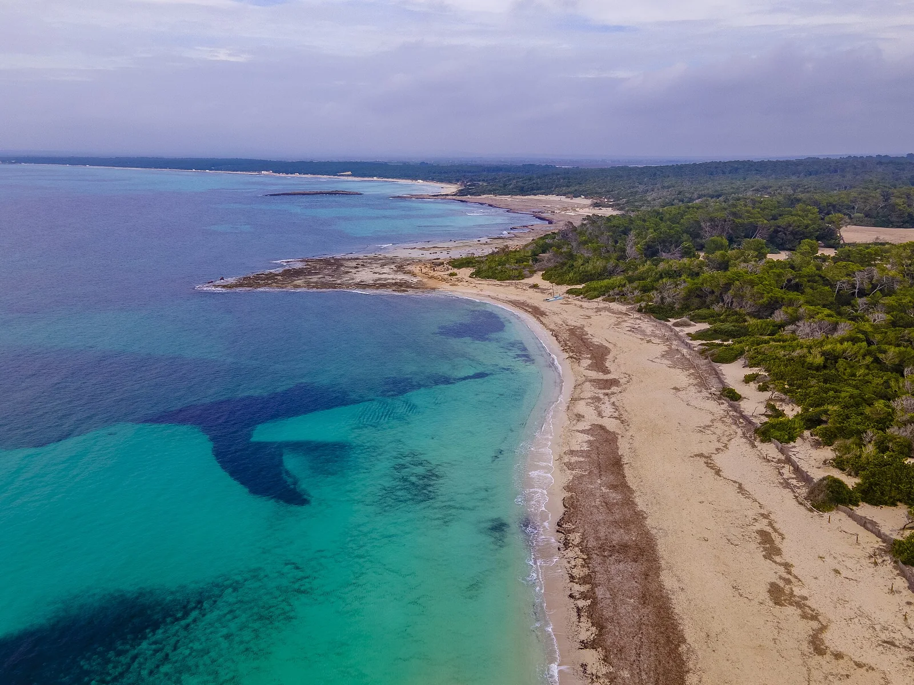

Es Trenc
Majorque, Baléares, Espagne · baignade

Longue plage de sable blanc du sud de Majorque, protégée au sein d’un parc naturel avec dunes et salines. L’eau reste peu profonde loin du bord.
- Lieu
- Majorque, Baléares, Espagne
- Niveau
- Débutant
- Activités
- baignade
- Type d'eau
- Mer / océan
- Coordonnées
- 39.34, 2.99 (position approximative du secteur)
Dangers à connaître
- Méduses certains étés : regarde les drapeaux.
- Peu d’ombre et chaleur forte l’été.
Le conseil d'Ocean Buddy
Prévois de l’ombre et de l’eau : les services sont limités sur cette plage restée sauvage.
Ouvrir dans Ocean Buddy Télécharger sur l'App Store
Source : Fiche Ocean Buddy · septembre 2026 · à vérifier localement.